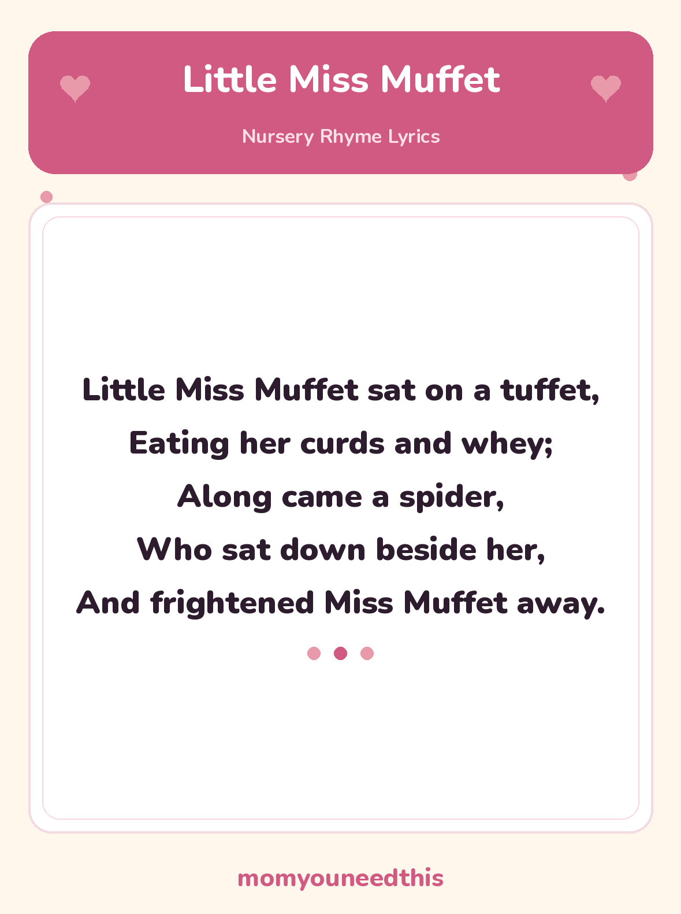

Little Miss Muffet The Classic Spider Rhyme, With Lyrics and a Free Printable
The spider is the star here — expect demands to repeat the moment it sits down, and some dramatic acting-out of the fright. It's also a small food-history lesson: nobody eats curds and whey anymore, which is half the conversation.
Last updated: October 25, 2026
Quick Answer
Little Miss Muffet is a classic nursery rhyme about a girl eating curds and whey who is frightened away by a spider. The full traditional lyrics are written out on this page, and the same words are on the free printable lyrics sheet, ready to print and sing together at home.
At a Glance
- Rhyme: Little Miss Muffet
- Type: Story rhyme
- Best for: Ages 2–6
- Printable: 1 lyrics sheet
- Tradition: In print since 1805
- Cost: Free — print at home
🎵 Little Miss Muffet Lyrics
The full traditional rhyme — one short verse, with a spider who only wants to sit down.
Little Miss Muffet sat on a tuffet,
Eating her curds and whey;
Along came a spider,
Who sat down beside her,
And frightened Miss Muffet away.

✂️ Download Your Free Little Miss Muffet Lyrics Sheet
The full Little Miss Muffet lyrics on one big, clear sheet — made for fridges and singing together.
⬇️ Download Free Lyrics Sheet 🖨️ Print🎁 Free printable for ages 2–6
🧀 About This Rhyme: Curds, Whey and Tuffets
Two old-fashioned words do all the work in this rhyme. Curds and whey are what milk separates into: the soft white lumps are the curds, and the thin watery liquid left behind is the whey. Together they look and taste a little like cottage cheese, and they were an everyday food when this rhyme was new — Miss Muffet is simply eating her lunch.
A tuffet is a small, low stool — or a little grassy mound to sit on. So the whole scene is a picnic: a girl sitting outside with her bowl, when a spider comes along and sits down beside her. The spider does nothing worse than arrive, which is exactly why small children find it funny — the fright is all surprise, and the rhyme is over before anyone is really scared.
That tiny story shape — a calm start, a surprise, and a quick ending — makes this a good first story rhyme. Children can retell it in order after just a few hearings: where she sat, what she ate, who came along, and what happened next.
🖨️ How to Use This Rhyme
- Sing it like a story. Use a calm voice for the first two lines, then slow right down for “Along came a spider” — the pause before the ending is where the giggles build.
- Act the surprise. Wiggle your fingers down like spider legs on “along came a spider,” and jump up together on the last line. Toddlers ask for this part again and again.
- Print the lyrics sheet. Put it on the fridge or a nursery wall. Big, clear type means children can follow the words with a finger while you sing.
- Let them tell it back. After a few rounds, pause before “frightened Miss Muffet away” and let your child finish the rhyme — that is early reading confidence.
🎵 More Nursery Rhymes & Fun
🎵 Nursery Rhymes
The full hub of classic nursery rhymes — lyrics and a free printable sheet for every rhyme. Browse all nursery rhymes.
🎶 Pat-a-Cake
The classic clapping rhyme for babies and toddlers, with the actions and a printable lyrics sheet. Read Pat-a-Cake.
🎶 Mary Mary Quite Contrary
The garden rhyme of silver bells and cockle shells, with the old garden words explained. Read Mary Mary Quite Contrary.
🎨 Free Coloring Pages
Hundreds of free coloring sheets to print for every age. See the coloring pages.
❓ Little Miss Muffet FAQ
What are the lyrics to Little Miss Muffet?
The full words are in the lyrics section near the top of this page — the complete verse, tuffet, spider and all. The free printable sheet carries the same words for singing from paper.
What age is Little Miss Muffet for?
It suits toddlers and preschoolers, roughly ages 2 to 6. The rhyme is short enough for a 2-year-old to follow, and older preschoolers enjoy acting out the spider surprise and retelling the little story in order.
Can I print the lyrics sheet?
Yes — the lyrics sheet is free to print at home, with no signup. It is a single page carrying the full rhyme in big, clear type, made for fridges, nursery walls and singing together.
What are curds and whey?
Think of cottage cheese before it had a brand name: milk left to separate forms soft white lumps — the curds — floating in a thin, watery liquid, the whey. It was an ordinary, inexpensive food, the kind of snack a girl might carry on an ordinary day.